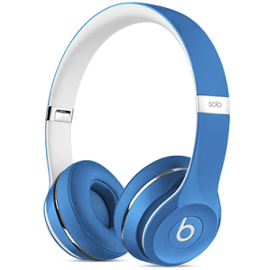

Наушники BEATS
Технология DSEE восстанавливает потерянный при сжатии звук Точная настройка звука с помощью приложения Sony | Headphones Connect До 50 часов работы от аккумулятора и быстрая зарядка Беспроводная технология Bluetooth для свободы движения
Цена
1 999 ₽